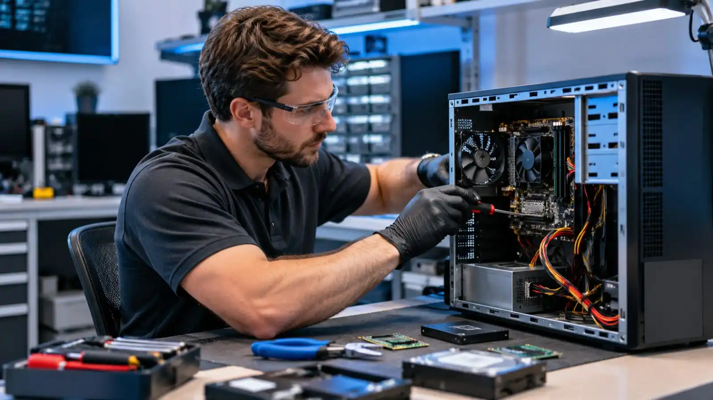
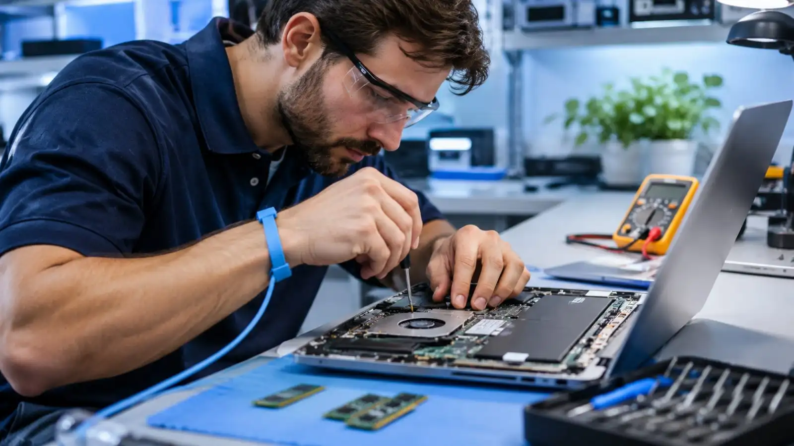
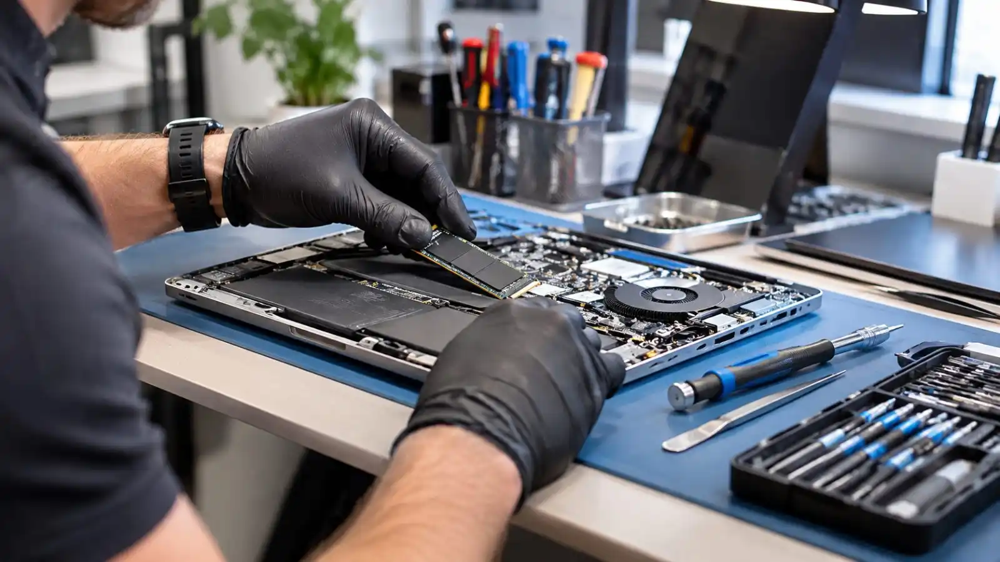

Computer Security Help
Worried your computer is infected? Get help. Get a Free Estimate
Unexpected pop-ups, browser redirects, suspicious programs, and unusual computer behavior can indicate unwanted software or a security problem. Some symptoms have harmless explanations, while others require prompt attention.
Ashburn Computer Repair helps Northern Virginia customers assess possible infections, remove unwanted software where feasible, and understand steps to improve computer security.

Malware can affect browsers, installed applications, operating systems, and personal information. We focus on identifying suspicious behavior, understanding the scope of the problem, and choosing a sensible cleanup approach.
Persistent advertisements and fake security warnings may result from unwanted browser extensions, notifications, or malicious software.
Unexpected search engines and website redirects may indicate altered browser settings or unwanted extensions.
Programs installed without clear permission may affect performance, privacy, or normal computer operation.
We evaluate suspicious software and discuss removal, repair, or operating system reinstallation where appropriate.
We explain practical precautions such as software updates, password changes from a trusted device, and backup planning.
| Service | Estimated Cost | Average |
|---|---|---|
| Malware assessment | Quote required | Varies by issue |
| Malware cleanup | Quote required | Varies by severity |
| Operating system reinstallation | Quote required | Varies by requirements |
The cost depends on infection severity, operating system condition, and whether data backup or software reinstallation is needed.
We consider whether suspicious symptoms are caused by malware, browser settings, or another problem.
We discuss steps to reduce the risk of repeat infections.
We explain when reinstalling the operating system may be safer than attempting to clean a heavily compromised system.
Describe the suspicious activity and get guidance on your next step.
Free — no obligations

Tell us about pop-ups, alerts, redirects, or unusual activity.
We investigate suspicious programs and system behavior.
We discuss appropriate removal or reinstallation options.
We perform the agreed cleanup and review remaining concerns.
We explain updates, safer browsing practices, and backup options.